This class is used to define the optical surface object, which contains all informations related with the optical surfaces defined.
Number of Properties: 30
Number of Methods: 1
Most of the properties defined in the surface class are used for optical system analysis in the toolbox.
Important Methods
1. Surface Coordinate Transformation Matrix Computation
Syntax:
[surfaceCoordinateTM,nextReferenceCoordinateTM] = surf.TiltAndDecenter (refCoordinateTM,prevSurfCoordinateTM,prevThickness)
This function updates the coordinate transformation matrix of the surface from previous reference axis and surface tilt and decenter parameters.
Tilt and Decenter
Tilting and decentering of optical surfaces results in non-rotationally symmetric systems which are used in many modern optical systems. Some of those systems include fold mirrors, periscopes, scanning systems and prisms. Modeling of tilt and decenter requires careful treatment of the local coordinate system of the surface and the global coordinate of the system. In the ray trace toolbox three coordinate systems were used to define the surface tilt and decenter of optical systems.
In addition to the global coordinate, two coordinate systems are established for each surface of the optical system. They are defined using the fixed global coordinate system as reference.
Tilt and decenter can be applied to any surface with respect to the reference coordinate and so no special surface is required for coordinate break. And three tilt modes are used to determine how the reference coordinate system should be computed after the tilted/decentered surface. These tilt modes are:
Surface tilts are defined by specifying Euler angles of rotation Tx, Ty and Tz, about the three axes of the reference coordinate system for each surface. All the angles are directly given by the user as surface parameters. The sign of the tilt angles follows a mathematical convention that it is positive for counter-clockwise rotation and negative for clockwise rotation. In an Euler angle system, each of the three tilt operations takes place in the tilted coordinate system of the preceding tilt. Thus, tilting is non-commutative and undoing tilts requires operations in the reverse order.
Surface decenter values indicate the location of surface vertex with respect to the surface reference coordinate. The x and y decenters values with respect to the origin of the reference coordinate system is entered by the user as surface parameter. And the surface thickness is taken as the decenter in the z-direction.
For mathematical purpose, the surface local and reference coordinate systems are represented by 4x4 matrices called the coordinate transformation matrices. A coordinate transformation matrix defines the rotation matrix and decenter vector of a given coordinate system with respect to the global coordinate system.
This simplifies the conversion of local/reference to global coordinates system and vice versa for each surface in the optical system. The coordinate transformation matrix M is given as:
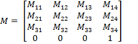
The 3x3 matrix in the upper left side of the transformation matrix corresponds to the total rotation matrix and the last column represents the total decenter vector of the surface local coordinate with respect to the global coordinate. The last row is not necessary but is added just to simplify matrix operations.
As mentioned above the tilt and decenter operations are not commutative, the order shall be specified by the user. Once the tilt and decenter data of each surface in the optical system is specified, the coordinate transformation matrices for each surface local and reference coordinate systems can be computed.
In the following discussion the L and R will be used for the coordinate transformation matrix of the surface local and reference coordinate with respect to the global coordinate respectively. And LR will be used for the transformation matrix of surface local coordinate with respect to the reference coordinate.
For object surface the surface local and reference coordinate are made the same and the corresponding coordinate transformation matrix to global coordinate will be:
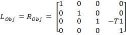
where T1 is the first thickness after object surface.
As the global coordinate is fixed to the first surface next to the object, the z decenter value will be negative of the thickness.
As the tilt and decenter data of the next surface are given with respect to the previous reference coordinate system, the local to reference coordinate transformation matrix of the surface can be computed from the tilt and decenter data sequentially using the operations given in the following table. The algorithm starts with the local to reference transformation matrix for object surface, which is an identity matrix 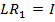, as both coordinate systems are identical for the object surface.
Tilt/Decenter |
Operation on the Transformation Matrix |
Dx |
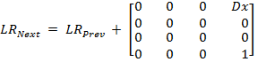 |
Dy |
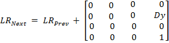 |
Dz |
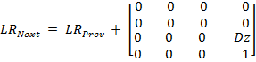 |
Tx |
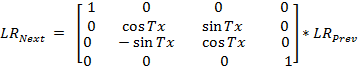 |
Ty |
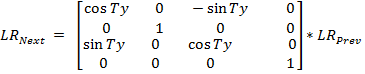 |
Tz |
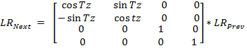 |
Once the surface local to reference coordinate system transformation matrix is determined, the surface local to global coordinate transformation matrix of the surface can then be computed by:
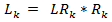
To continue with the next surface, the new reference coordinate system 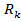 has to be determined based on the tilt mode of the current surface.
The following table summarizes the operations required to get 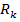, the transformation matrix for the next reference coordinate, depending on the surface tilt mode.
Tilt Mode |
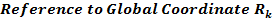 |
Decenter and Return (DAR) |
Make the next reference coordinate the same as the previous reference coordinate but translated in z by the thickness. 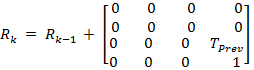 |
New Axis (NAX) |
Make the next reference coordinate the same as the current surface local coordinate. 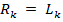 |
Bend (BEN) |
Compute the next reference coordinate
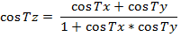 |
Created with the Personal Edition of HelpNDoc: Free EBook and documentation generator